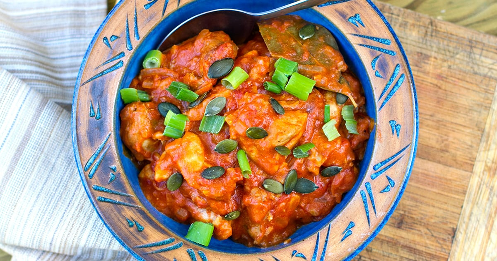

West Afircan Chicken Stew

Ingredients
- 4 uncooked chicken legs
- 2 tbsp coconut oil, ghee, lard, or tallow
- 1 large yellow onion chopped
- 1 tsp fresh ginger minced
- 3 large garlic cloves minced
- 1 lb red bell peppers seeded and chopped
- 1/2 cup of bullion stock or bovril
- 1 lb sweet potatoes peeled and cut into chuknks
- 1 1/2 cups chicken stock
- 2 cups crushed tomatoes
- 1/2 cup almond butter
- 1/2 tsp ground coriander
- 1/2 tsp ground cinanamon
- 1/2 tsp ground cumin
- 1/2 tsp sea salt
- 1/2 tsp chili powder
- 2 tbsp cilantro chopped
Directions
- Salt the chicken pieces, heat the fat in large soup bowl.
- Brown the chicken, may need to be done in batches.
- Set chicken pieces aside as they brown.
- Saute onions in fat for 3-4 minutes.
- Add ginger and garlic for another 1-2 minutes.
- Add sweet potato and bell peppers.
- Add browned chicken, chicken stock, tomato paste, almond butter and spices.
- Bring to simmer for 5-7 minutes.
- Then cover pot and simmer on low for 90 minutes.
- Stir in cilantro, then serve.